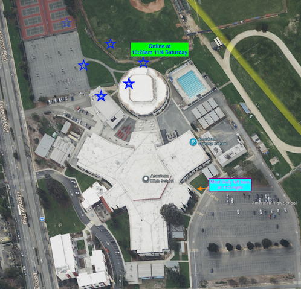

The location was in American High School Fremont California as shown in the map below. People coming to school on that morning might have seen.
If you happen to find these items, we kindly ask you to get in touch with us by texting or calling (510) 255-5259. Please note, the MacBook laptop is remotely locked and can only be unlocked by Apple.
Serial number of the Macbook: FVHHVKJQQ6L4.
